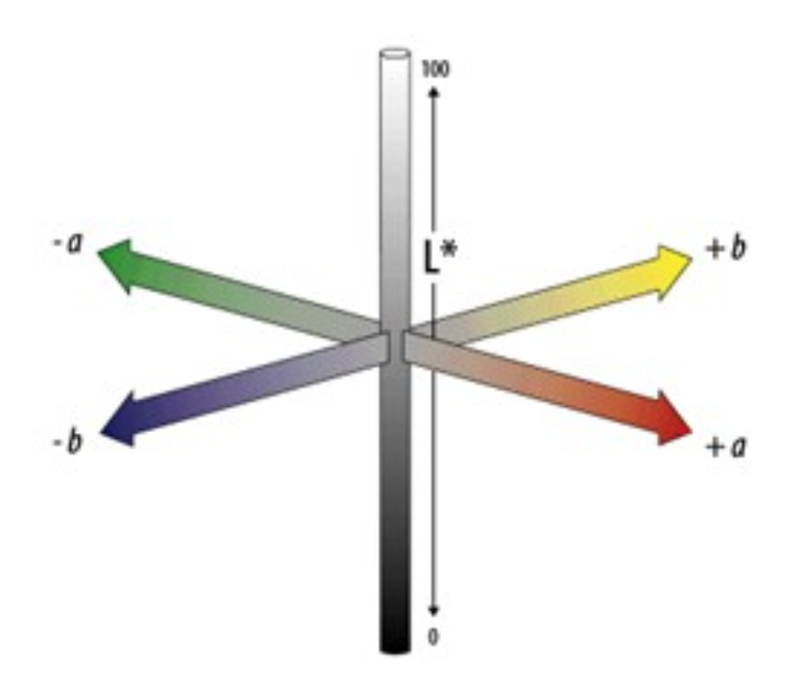
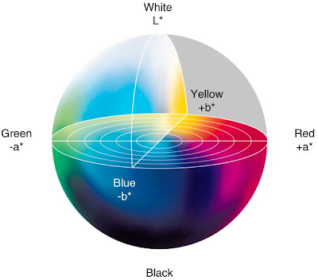
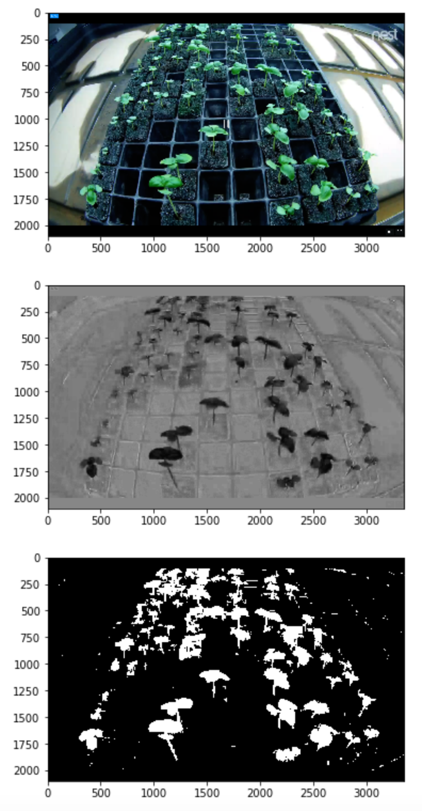
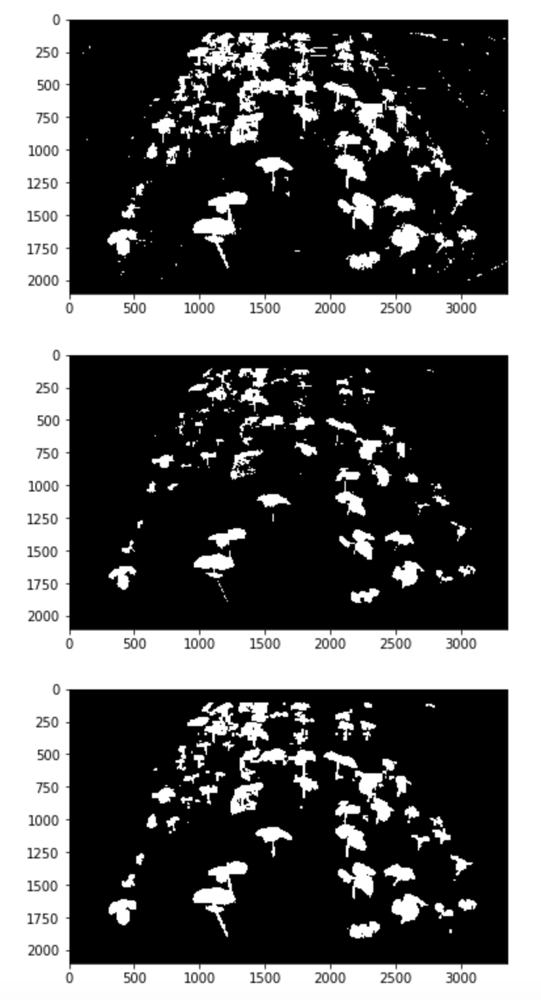

LAB color space
- To better extract plants from background, separating green components from others.
- Simple approaches on filtering in RBG color space was not producing good results.
- LAB separates green from red, blue from yellow and separates amount of light from color.


The LAB color space
Filtering Plants

Filtering based on -ve A channel values and thresholding higher values to black
Removing Noise
- Erosion:
2D convolution over binary image with square kernel of specified size (say 5x5)
Sets center pixel to 1 only if all pixels under kernel are 1
Therefore erodes values at the boundaries of objects (i.e. sets to 0) - Dilation:
2D convolution over binary image with square kernel
Sets center pixel to 1 if any one of the pixels under the kernel is 1
Expands boundaries, fills gaps within objects

Erosion to remove noise, Dilation to get back width on the plants, finally calculate area